AquaryU
Astrology-Based Dating
Designing a dating app where compatibility comes from synastry, not swipes, built end-to-end from concept to clickable prototype.
The projectat a glance
Context
Dating apps reduce compatibility to a photo and a bio. AquaryU's founder wanted to test a different premise: that synastry, the astrological comparison of two birth charts, could surface more meaningful matches than a swipe ever could. My job was to turn that abstract concept into something a user could understand and trust in under 30 seconds.
My contribution
I owned the end-to-end UX and UI design: user flows, information architecture, high-fidelity screens, and an interactive prototype covering discovery, compatibility scoring, profile setup, matching, and in-app chat. I worked solo, with no dedicated PM, collaborating directly with the founder on both product direction and design decisions.
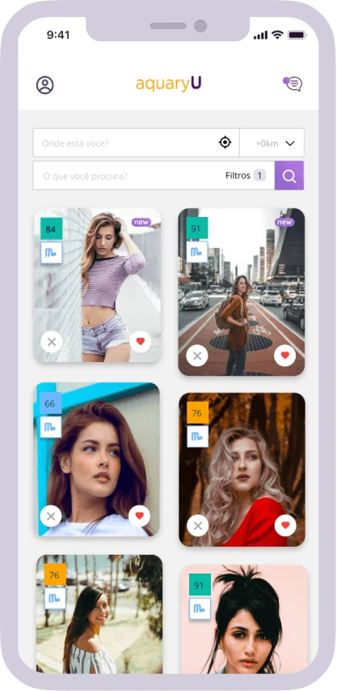
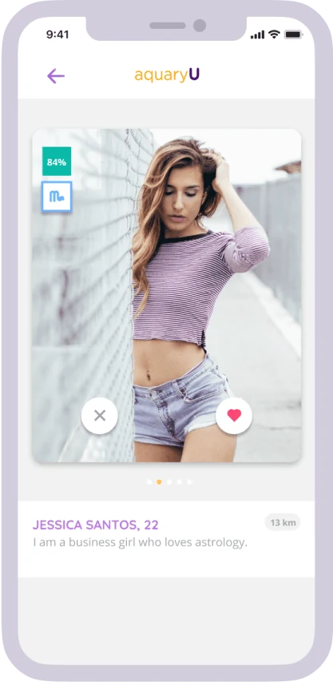
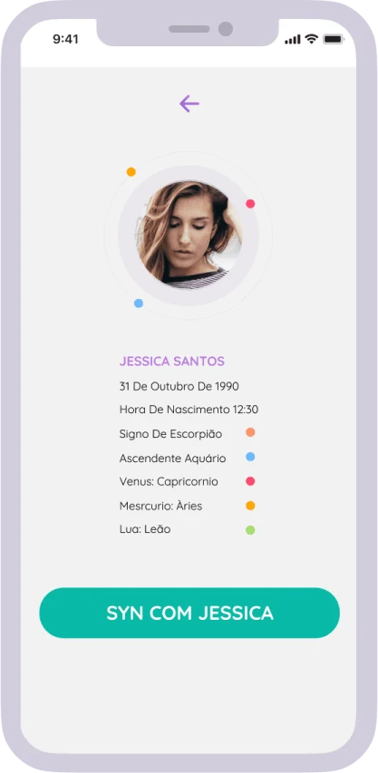
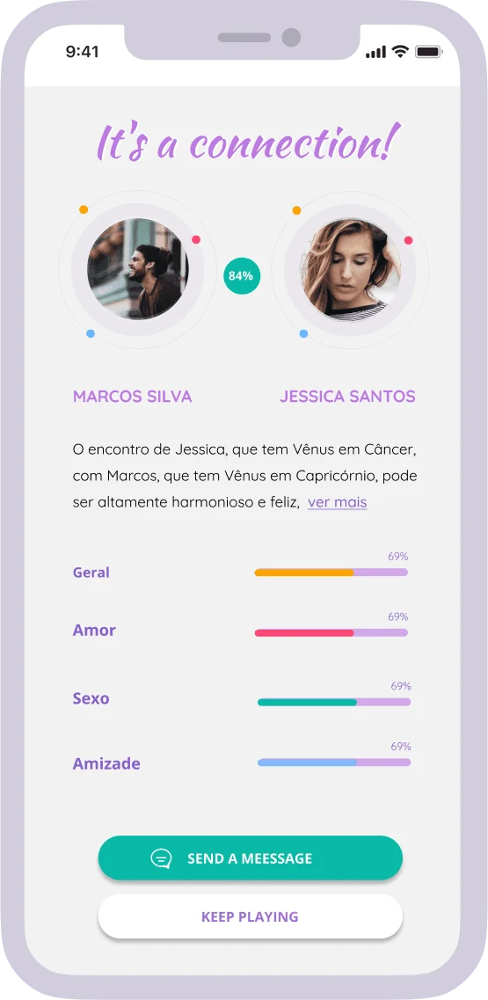
The product's core differentiator is the compatibility engine: users get a synastry-based match score instead of a swipe deck, making a subjective decision feel more grounded and intentional.
Surface-level apps,surface-level matches
Most mainstream dating apps optimize for the first five seconds: a photo, a one-line bio, a swipe. That format rewards surface-level attraction and gives almost no signal about whether two people would actually be compatible once the swiping stops.
Surface-level matching
Most dating apps optimize for first impressions (photos, bios, proximity) with no signal for deeper compatibility.
No depth for an audience that wants depth
Young people already engaged with astrology and self-discovery had no dating product that took that interest seriously instead of treating it as a gimmick.
Compatibility discovered too late
On typical apps, real compatibility is something people stumble into after several conversations, not something the product helps surface up front.
What successlooked like
Make synastry legible, fast
Turn a traditionally dense, narrative astrological comparison into something a person could understand and act on in seconds, not minutes of reading.
Make astrology the mechanism, not decoration
Compatibility needed to genuinely drive who people saw and matched with, not sit next to a conventional swipe feed as a side feature.
From birth charts toa clickable product
Researching apps and astrology
I researched existing dating apps to understand where the format breaks down, and studied synastry in depth: how birth charts are compared, what makes a reading feel credible versus generic, and how that logic could translate into a digital compatibility signal.
Mapping flows around the score
I mapped the core flows: onboarding (collecting birth data), discovery, compatibility scoring, match and chat. The information architecture was built around a single idea: the compatibility score sits at the center of the experience, not as an add-on to a swipe feed.
Iterating directly with the founder
I designed the experience from wireframes to high-fidelity UI in fast iterative rounds with the founder, reviewing and refining each flow before moving to the next.
A fully clickable prototype
I delivered a clickable prototype covering onboarding, discovery, compatibility scoring, matching and chat. The founder navigated and approved it; the project didn't reach testing with real end users before development was meant to begin.
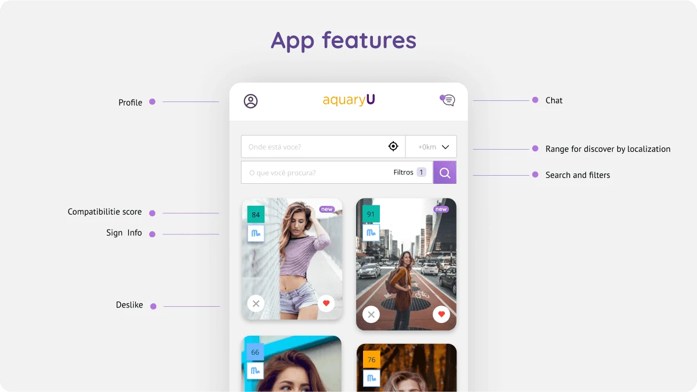
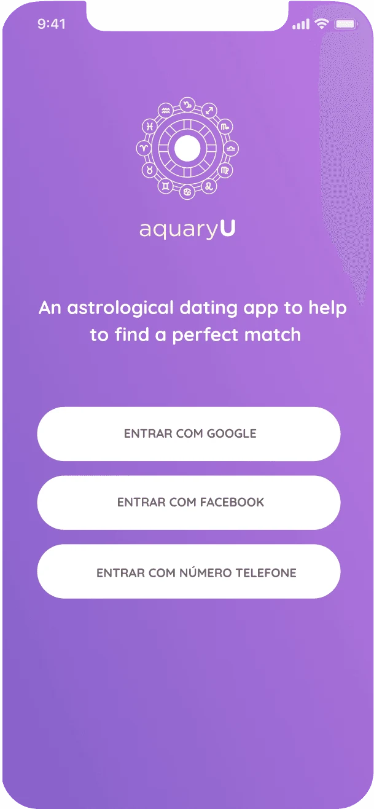
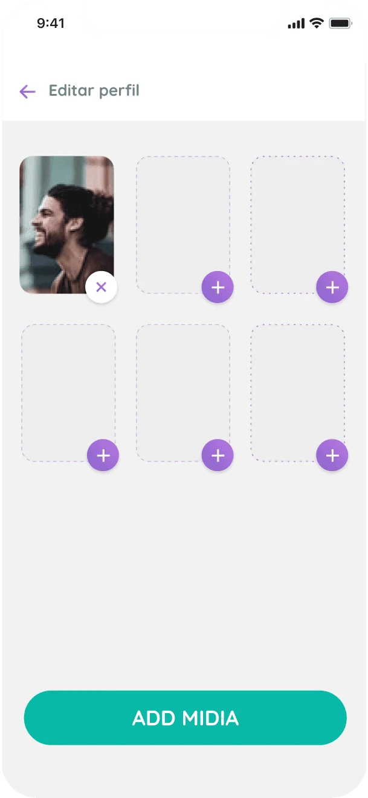
Key choicesand why
The reasoning behind the most important decisions: not just what was designed, but the thinking that got there.
A compatibility score, not just a reading
Synastry is naturally narrative. But a dating app needed something a person could scan in under a second. I designed the core signal as a number (e.g. 87% compatible), with the fuller astrological narrative underneath for people who wanted to go deeper. The score did the job swiping does on other apps, a fast first filter, while the narrative gave it substance a swipe never has.
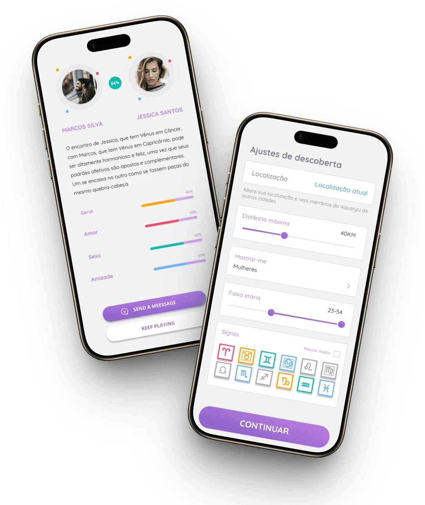
Score shown before the match, not after
The score appears before a match is confirmed, not as a reward unlocked afterward. On a normal dating app, attraction comes first and compatibility is discovered later, often too late. Here, people chose who to engage with already knowing the compatibility read. Synastry stopped being a nice extra and became the basis for the decision to connect.
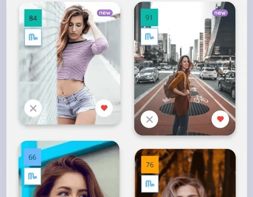
Short, sequential onboarding for sensitive birth data
Synastry requires birth date, time and location: data most apps never ask for, and that can feel invasive if requested all at once. I broke onboarding into one question per screen instead of a dense form, so the process felt like a guided conversation rather than paperwork.
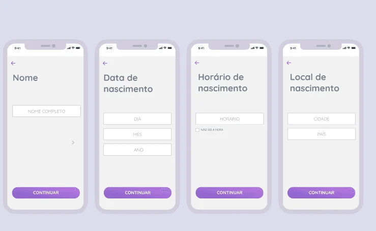
Leaning into the astrological tone, not softening it
The founder's direction was clear: the product should feel astrological and mystical, not like a generic dating app with a horoscope bolted on. Rather than tone it down to look more "serious", I designed into it. Language, iconography and visual style all leaned into the astrological framing, trusting that people choosing an astrology-based app already wanted that experience.
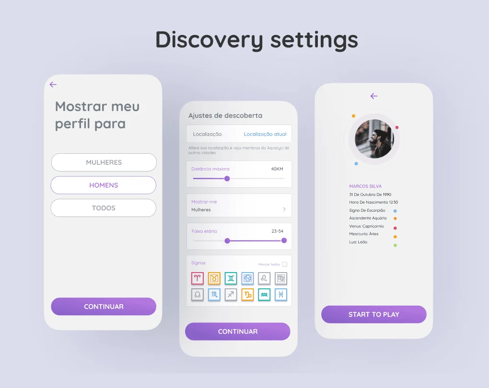
A complete prototype
The project reached a fully navigable prototype. It didn't move into development: the founder took a full-time job and stepped away before the build phase. The design was never the blocker; it was a side project that lost out to a stable opportunity, which happens often with early-stage, founder-led products.
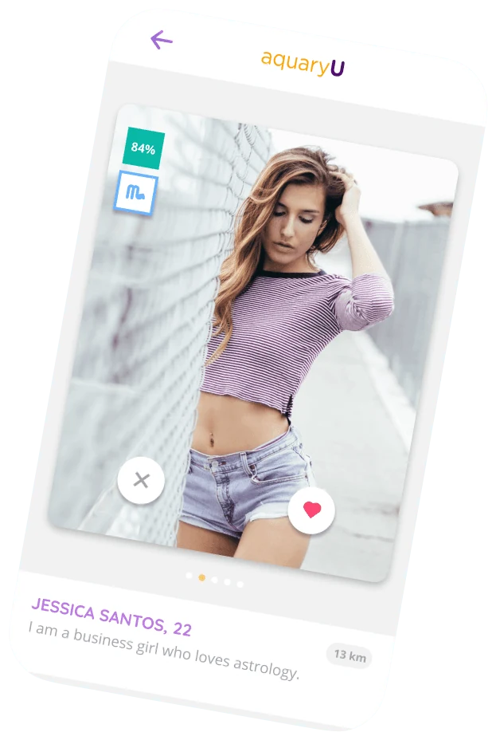
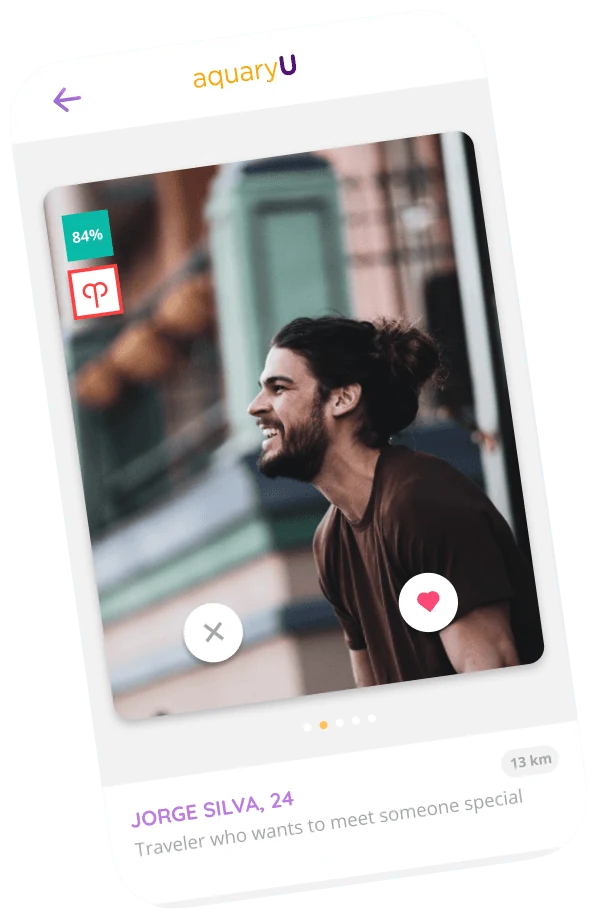
What Itook away
A fast, scannable signal
Designing the score as a fast, scannable signal, instead of burying compatibility inside a long reading, made the core value visible in the first few seconds. Speed-to-value matters even in a product built around something as unhurried as astrology.
Validate beyond the founder
The prototype was approved by the founder but never tested with real end users. A founder's reaction isn't the same as a target user's. With more time, I'd have tested it with a handful of people from the actual audience.
Matching logic is a trust mechanism
Whether it's photos, a swipe or a synastry score, the real design question in a dating app is always the same: what convinces someone it's safe and worthwhile to engage with a stranger?
Designing for belief, not just behavior
This was my first product whose value depended on a belief system rather than a measurable behavior. I'd like to design more products where value is emotional or experiential first, and learn research methods built for that, not just usability testing for utilitarian products.